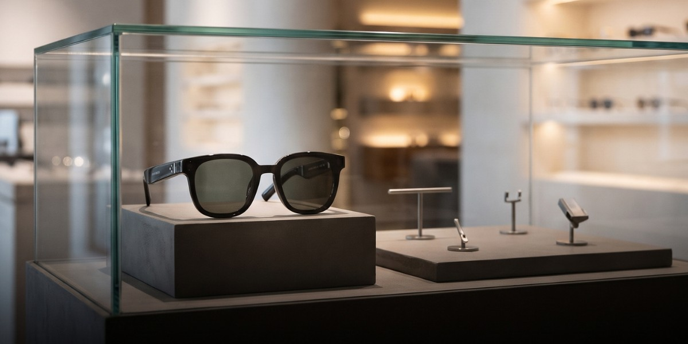

Geekotidien · Édition du 19 novembre 2026
Lunettes Google en rupture
Les précommandes sont épuisées chez Gentle Monster

Les précommandes des nouvelles lunettes connectées développées par Google et Samsung avec Gentle Monster et Warby Parker sont épuisées chez Gentle Monster, aux États-Unis et en Corée. Les précommandes ont ouvert le 12 novembre 2026.
Warby Parker reste disponible. The Korea Herald signale que certains modèles de Gentle Monster en Corée ont été indisponibles après quelques heures. Le nombre d'unités produites n'est pas connu.
Ces lunettes fonctionnent sous Android XR et intègrent Gemini, l'assistant de Google, pour concurrencer les Ray-Ban Meta. Elles permettent de demander à l'IA d'effectuer des tâches sans sortir son smartphone.
L'information est reprise de 9to5Google, publiée le 16 novembre 2026. L'article juge difficile de conclure au succès commercial faute de chiffres, et il ne donne pas de date de lancement en Europe.
Le + : L'information repose sur deux sources de presse, 9to5Google et The Korea Herald, sans communiqué de Google ou de Samsung.